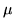

The NIST file format is also referred to as the Sphere file format. A NIST header consists of ASCII text. It begins with a label of the form NISTxx where xx is a version code followed by the number of bytes in the header. The remainder of the header consists of name value pairs of which HTK decodes the following
sample_rate - sample rate in HzThe current NIST Sphere data format subsumes a variety of internal data organisations. HTK currently supports interleaved law used in Switchboard, Shortpack compression used in the original version of WSJ0 and standard 16bit linear PCM as used in Resource Management, TIMIT, etc. It does not currently support the Shorten compression format as used in WSJ1 due to licensing restrictions. Hence, to read WSJ1, the files must be converted using the NIST supplied decompression routines into standard 16 bit linear PCM. This is most conveniently done under UNIX by using the decompression program as an input filter set via the environment variable HWAVEFILTER (see section 4.8).
sample_n_bytes - number of bytes in each sample
sample_count - number of samples in file
sample_byte_format - byte order
sample_coding - speech coding eg pcm, law, shortpack
channels_interleaved - for 2 channel data only
For interleaved law as used in Switchboard, the default is to add the two channels together. The left channel only can be obtained by setting the environment variable STEREOMODE to LEFT and the right channel only can be obtained by setting the environment variable STEREOMODE to RIGHT.